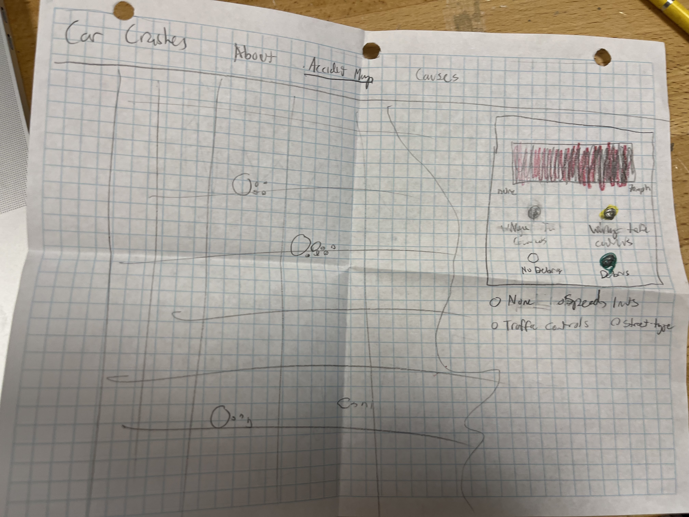
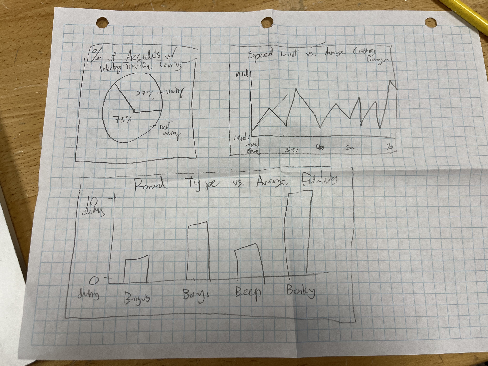

Speed limits are often touted as a cheap, easy way to stop speeding. Traffic control devices such as stop signs and traffic lights are hailed with creating safer roads.
But is this true? Are these measures as effective at reducing fatalities as people think? Or, does the street being a 4-way intersection liken the chance of dangerous crashes more than any of these factors?
In "Don't be Rash with Car Crash(es)", I compare data from car crashes in Chicago with 1 or more fatalities or injuries with the speed limits, traffic control devices, and street types where the accident took place. When we're building our roads, should we avoid certain street types and nail the trees with speed limits?
What measures, if any, could reduce the chance of dangerous crashes?
The first prototype was this: it was a little messy and the graphs were not suited to the message. After feedback I revised them.
 